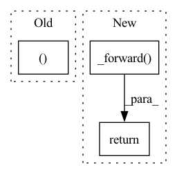

Pattern ID :40369
Before Change
ignore_index=ignore_label)
def forward(self, score, target):
ph, pw = score.size(2), score.size(3)
h, w = target.size(1), target.size(2)
if ph != h or pw != w:
score = F.upsample(After Change
weights = config.LOSS.BALANCE_WEIGHTS
assert len(weights) == len(score)
return sum([w * self._forward( x, target) for (w, x) in zip(weights, score)])
class OhemCrossEntropy(nn.Module):In pattern: SUPERPATTERN
Frequency: 5
Non-data size: 3
Instances Fragment ID: 114528935
Project Name: chenjun2hao/ddrnet.pytorch
Commit Name: 3ce340bc520946fb220e83075f6e015bbe87cfe5
Time: 2019-12-12
Author: hsfzxjy@gmail.com
File Name: lib/core/criterion.py
M Class Name: CrossEntropy
N Class Name: CrossEntropy
M Method Name: forward(3)
N Method Name: forward(3)
M Parent Class: nn.Module
N Parent Class: nn.Module
M File Name: lib/core/criterion.py
N File Name: lib/core/criterion.py
M Start Line: 20
M End Line: 28
N Start Line: 36
N End Line: 42
Before Change
// @jit
def forward(self, x):
w, b = self.params[0]
return jnp.dot(w, x) + b
@propertyAfter Change
return jnp.dot(w, x) + b
def forward(self, x):
return self._forward( x)
@property
def input(self):
return self._input Fragment ID: 114528934
Project Name: dssc-projects/veni
Commit Name: f04cb26555f4b017a5694307ffd3bcd9ca8cb6c1
Time: 2022-05-08
Author: 93731561+dario-coscia@users.noreply.github.com
File Name: jax_forward/net.py
M Class Name: Linear
N Class Name: Linear
M Method Name: forward(2)
N Method Name: forward(2)
M Parent Class: object
N Parent Class: object
M File Name: jax_forward/net.py
N File Name: jax_forward/net.py
M Start Line: 72
M End Line: 73
N Start Line: 79
N End Line: 79
Before Change
act = jnp.dot(w, x) + b
x = self._functions[i](act)
final_w, final_b = self.params[-1]
return jnp.dot(final_w, x) + final_b
After Change
return jnp.dot(final_w, x) + final_b
def forward(self, params, x):
return self._forward( params, x)
@property
def layers(self):
return self._layers Fragment ID: 114528933
Project Name: dssc-projects/veni
Commit Name: f04cb26555f4b017a5694307ffd3bcd9ca8cb6c1
Time: 2022-05-08
Author: 93731561+dario-coscia@users.noreply.github.com
File Name: jax_forward/net.py
M Class Name: MLP
N Class Name: MLP
M Method Name: forward(3)
N Method Name: forward(2)
M Parent Class: object
N Parent Class: object
M File Name: jax_forward/net.py
N File Name: jax_forward/net.py
M Start Line: 33
M End Line: 39
N Start Line: 41
N End Line: 42
Before Change
outputs = self.prompt_model(batch)
logits = outputs.logits
logits, labels = self.shift_logits_and_labels(logits, batch)
batch_size, seq_len, vocab_size = logits.shape
loss = self.loss_fct(logits.view(-1, logits.size(-1)), labels.view(-1))
loss = loss.view(batch_size, -1).sum(dim=-1) //TODO support more objectivesAfter Change
if self.in_generation_function:
return self.prompt_model.model.forward(*args, **kwargs)
else:
return self._forward( *args, **kwargs)
def _forward(self, batch: Union[Dict, InputFeatures]) -> torch.Tensor:
r
This is the forward method of the training of generation in prompt-learning framework. Fragment ID: 114528932
Project Name: thunlp/openprompt
Commit Name: 3b447c9d4ffc817086ffe4504fa97a844fc60c48
Time: 2021-10-11
Author: shengdinghu@gmail.com
File Name: openprompt/pipeline_base.py
M Class Name: PromptForGeneration
N Class Name: PromptForGeneration
M Method Name: forward(1)
N Method Name: forward(2)
M Parent Class: nn.Module,GenerationMixin
N Parent Class: nn.Module,GenerationMixin
M File Name: openprompt/pipeline_base.py
N File Name: openprompt/pipeline_base.py
M Start Line: 363
M End Line: 380
N Start Line: 361
N End Line: 375
Before Change
loss_hard = loss[loss > self.thresh]
if loss_hard.numel() < n_min:
loss_hard, _ = loss.topk(n_min)
return torch.mean(loss_hard)
After Change
def forward(self, preds, labels: Tensor) -> Tensor:
if isinstance(preds, list):
return sum([w * self._forward(pred, labels) for (pred, w) in zip(preds, self.aux_weights)])
return self._forward( preds, labels)
class Dice(nn.Module):
def __init__(self, delta: float = 0.5, aux_weights: list = [1, 0.4]): Fragment ID: 114528939
Project Name: sithu31296/semantic-segmentation
Commit Name: b68900992fb24dd5166b2b34e3d35d19493d747d
Time: 2021-08-21
Author: sithu31296@gmail.com
File Name: utils/losses.py
M Class Name: OhemCrossEntropy
N Class Name: OhemCrossEntropy
M Method Name: forward(3)
N Method Name: forward(3)
M Parent Class: nn.Module
N Parent Class: nn.Module
M File Name: utils/losses.py
N File Name: utils/losses.py
M Start Line: 25
M End Line: 37
N Start Line: 46
N End Line: 49